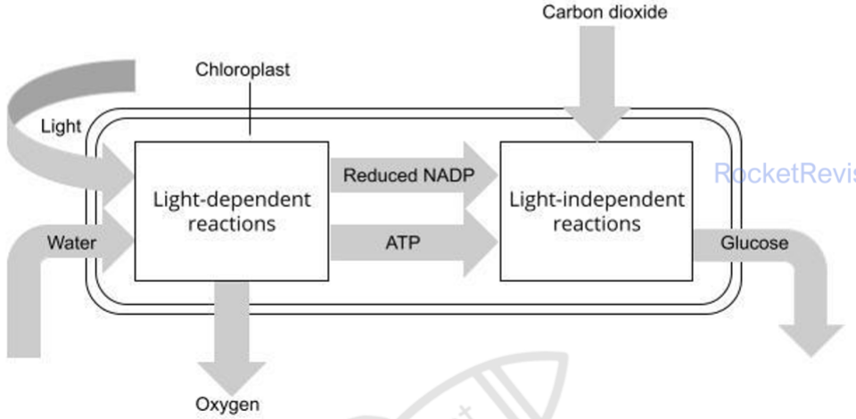
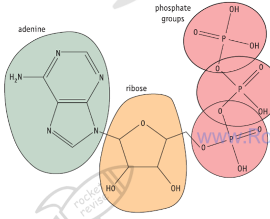
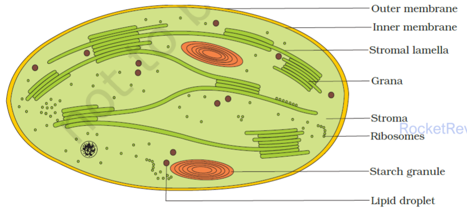
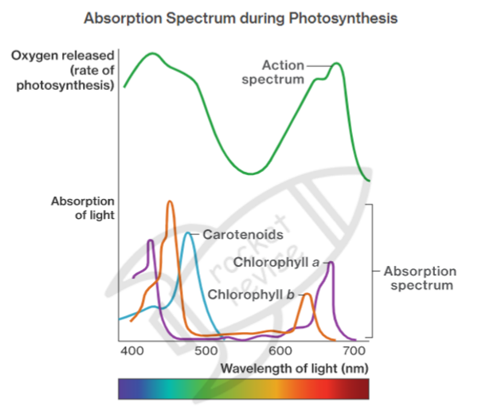
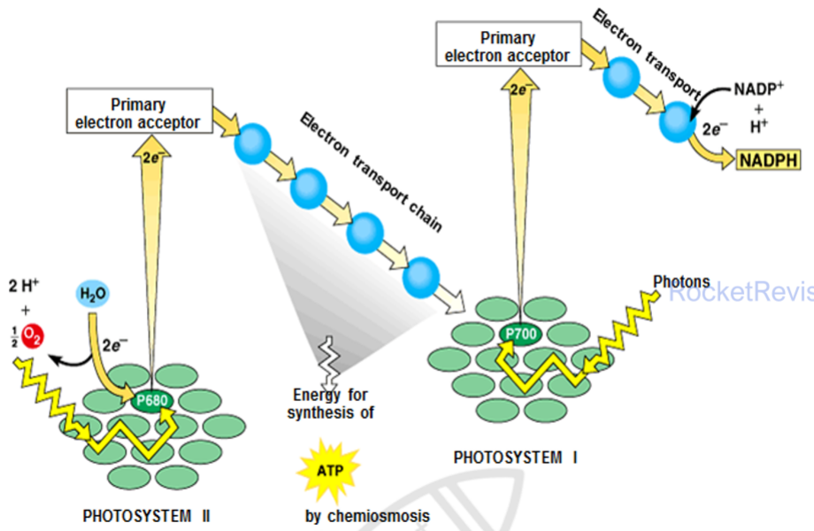

Photosynthesis
Photosynthesis is how green plants, algae and some bacteria turn light energy into chemical energy stored in sugars. Almost every food chain starts here, and the oxygen in the air is a by-product of the process. This page follows the energy from the moment light strikes a pigment molecule to the sugars made in the stroma, and explains why the rate of the process rises and falls.
1. The overall process and its two stages
The bonds holding hydrogen to oxygen in water are strong, so splitting water needs a large input of energy. In photosynthesis that energy comes from light. The hydrogen removed from water is not released as a gas. It is combined with carbon dioxide to make glucose, which acts as a fuel because the energy used to make it can be released again in respiration. The oxygen left over from the water is released into the atmosphere.
The balanced equation is 6CO₂ + 12H₂O → C₆H₁₂O₆ + 6H₂O + 6O₂, with light energy and chlorophyll as the conditions. Water appears on both sides because all the oxygen released comes from water, not from carbon dioxide, so twelve water molecules must be split to release six O₂. Cancelling the water gives the simpler form 6CO₂ + 6H₂O → C₆H₁₂O₆ + 6O₂.
The process is a chain of energy changes. Light energy is converted into the energy of excited electrons, and then into chemical energy held in ATP and reduced NADP. That chemical energy is finally used to make the bonds of glucose. Because these steps need different conditions and different places in the chloroplast, photosynthesis is divided into two linked stages.
- Light-dependent stage: takes place on the thylakoid membranes. It needs light, splits water (photolysis), releases oxygen and makes ATP and reduced NADP.
- Light-independent stage (Calvin cycle): takes place in the stroma. It uses the ATP and reduced NADP to reduce carbon dioxide to sugar. It does not use light directly, but it stops soon after the products of the light-dependent stage run out.

2. ATP: the energy carrier
ATP (adenosine triphosphate) is a nucleotide made of the base adenine, the 5-carbon sugar ribose and a chain of three phosphate groups. Cells use it as their immediate source of energy. Removing the last phosphate group by hydrolysis forms ADP and inorganic phosphate (Pi) and releases energy that can drive other reactions, such as muscle contraction, active transport and the synthesis of large molecules. The reaction is catalysed by the enzyme ATPase.
The reverse reaction, joining ADP and Pi to remake ATP, is phosphorylation. It needs an input of energy and is catalysed by ATP synthase. In photosynthesis that energy comes from light, so the process is called photophosphorylation. In respiration it comes from the oxidation of organic molecules.

- Hydrolysis of ATP: ATP + H₂O → ADP + Pi, releasing energy for biological processes.
- Phosphorylation of ADP: ADP + Pi → ATP, which requires energy.
- Why ATP suits its job: one hydrolysis releases a small, usable amount of energy in a single step, the reaction is fast, and ATP is soluble, so it moves easily to where energy is needed and is quickly remade.
3. Chloroplast structure and function
The chloroplast is an organelle found in the cells of green plant tissues, especially the palisade mesophyll. Each part of its structure suits one of the two stages. It is bounded by an envelope of two membranes. The outer membrane is freely permeable to small molecules such as carbon dioxide and water. The inner membrane holds transport proteins that control what enters and leaves, including sugars and proteins made in the cytoplasm but used inside the chloroplast.
The fluid inside the envelope is the stroma. It contains the enzymes of the Calvin cycle, including RUBISCO, so it is the site of the light-independent reactions. The stroma also contains starch grains that store the products, lipid droplets, a loop of DNA and 70S ribosomes, so the chloroplast can make some of its own proteins.
Running through the stroma is a system of flattened membrane sacs called thylakoids, the site of the light-dependent reactions. Thylakoids are stacked into grana (singular granum), and the grana are linked by flat membranes called lamellae. The thylakoid membranes hold the photosystems, the electron carriers and ATP synthase. Stacking gives a very large membrane area for capturing light. Each thylakoid also encloses a small space, the lumen, where hydrogen ions can build up to a high concentration, which is essential for making ATP.

When asked how a chloroplast is adapted, link each structure to a stage: thylakoid membranes with photosystems, electron carriers and ATP synthase for the light-dependent reactions; a lumen in which H⁺ accumulates; and a stroma containing RUBISCO and other Calvin cycle enzymes.
4. Pigments, spectra and chromatography
Chlorophyll a is the main pigment. It absorbs most strongly in the blue-violet and red parts of the spectrum and reflects green light, which is why leaves look green. Chlorophyll b and the carotenoids (carotene and xanthophylls) are accessory pigments. They absorb wavelengths that chlorophyll a absorbs poorly and pass the energy to chlorophyll a, so together the pigments use more of the visible spectrum. Each chlorophyll molecule has a head that absorbs light and a long hydrocarbon tail that anchors it in the thylakoid membrane.
Two graphs describe this. An absorption spectrum shows how much light of each wavelength a pigment absorbs. An action spectrum shows how effective each wavelength is at driving photosynthesis, measured for example as the rate of oxygen release. The action spectrum closely follows the combined absorption spectra of the pigments, which is evidence that the light absorbed by these pigments is the light used in photosynthesis.

The pigments in a leaf extract can be separated by chromatography on paper or on a thin-layer plate. A concentrated extract is spotted onto a pencil line near the bottom, and the bottom edge is dipped in a solvent that is kept below the spot. As the solvent rises, each pigment moves at its own speed, depending on how soluble it is in the solvent and how strongly it is held by the paper or plate. In the usual solvents carotene travels furthest, followed by xanthophyll, chlorophyll a and then chlorophyll b.
Core practical: separating chloroplast pigments. Grind leaves with a little propanone to extract the pigments. Build up a small, dense spot by adding drops and letting each one dry. Use a pencil line, because ink would itself separate. Remove the paper before the solvent reaches the top and mark the solvent front at once. Mark the pigment spots quickly too, as some fade in light.
Measure from the pencil line to the solvent front. Suppose this is 10.0 cm.
Measure from the pencil line to the centre of the pigment spot. Suppose this is 6.5 cm.
Rf = distance moved by the pigment ÷ distance moved by the solvent = 6.5 ÷ 10.0 = 0.65.
An Rf value is a ratio, so it does not depend on how far the solvent ran. It always lies between 0 and 1, and for a given pigment, solvent and paper it is constant, so it can be compared with known values to identify the pigment.
You can run a virtual chromatogram below and measure the Rf value of each spot.
5. Photosystems
On the thylakoid membrane, the pigments are grouped with proteins into photosystems. Each photosystem has an antenna complex of many pigment molecules. Light energy absorbed by any of them is passed from molecule to molecule until it reaches the reaction centre, a pair of chlorophyll a molecules. There the energy excites an electron so much that it leaves the chlorophyll and is taken up by an electron acceptor. The antenna works like a funnel, collecting light of many wavelengths and concentrating the energy on one place.
There are two photosystems. The reaction centre of photosystem II absorbs best at 680 nm, so it is called P680. The reaction centre of photosystem I absorbs best at 700 nm and is called P700. The numbers record the order of discovery, not the order of use: in the main pathway, photosystem II acts first.
| Feature | Photosystem II | Photosystem I |
|---|---|---|
| Reaction centre | P680 | P700 |
| Main position | Inner surfaces of the grana | Lamellae and the outer surfaces of the grana |
| Replaces its lost electrons from | Photolysis of water | Electrons passed along the carriers from photosystem II |
| Pathways it takes part in | Non-cyclic only | Both cyclic and non-cyclic |
6. The light-dependent reactions
Photolysis: splitting water
When P680 loses an electron, it must gain another before it can absorb light again. The replacement comes from water. Using light energy, an enzyme complex on the inside of the thylakoid membrane splits water: 2H₂O → 4H⁺ + 4e⁻ + O₂. The electrons go to photosystem II, the hydrogen ions stay in the lumen, and the oxygen is a waste product that diffuses out of the leaf or is used in respiration.
Non-cyclic photophosphorylation
Non-cyclic photophosphorylation is the main pathway. It uses both photosystems and produces ATP, reduced NADP and oxygen. The steps below follow the electrons from water to NADP.
Light absorbed by the antenna of photosystem II excites electrons in P680. They leave the chlorophyll and pass to an electron acceptor.
Photolysis of water replaces the lost electrons, releasing oxygen and adding hydrogen ions to the lumen.
Without this supply of electrons, P680 could not absorb light again and the flow would stop.
The electrons are passed along a chain of electron carriers in the thylakoid membrane in a series of redox reactions, losing energy at each step.
Some of that energy is used to pump hydrogen ions from the stroma across the thylakoid membrane into the lumen.
Moving ions against their concentration gradient needs energy, which comes from the electrons.
Hydrogen ions are now much more concentrated in the lumen than in the stroma. They can only diffuse back through channels in ATP synthase.
The flow of hydrogen ions through ATP synthase provides the energy to join ADP and Pi into ATP. Making ATP this way is chemiosmosis, and because light drives it, the process is photophosphorylation.
The electrons reach photosystem I, where light excites them again from P700 to a higher energy level, and they pass to a second electron acceptor.
The enzyme NADP reductase uses these electrons, together with hydrogen ions from the stroma, to reduce NADP to reduced NADP. Reduced NADP carries hydrogen to the Calvin cycle.

The light-dependent reactions do not make glucose. Their products are ATP, reduced NADP and oxygen. Glucose is made only in the light-independent reactions.
Cyclic photophosphorylation
Cyclic photophosphorylation uses photosystem I alone. Electrons excited from P700 pass to an acceptor and along the carrier chain, which pumps hydrogen ions into the lumen, so ATP is made by chemiosmosis. Instead of reducing NADP, the electrons return to P700 and the cycle repeats. Because water is not split and NADP is not reduced, the only product is ATP.
Cyclic flow matters because the Calvin cycle uses more ATP than reduced NADP: 3 ATP for every 2 reduced NADP. Non-cyclic flow on its own does not provide enough ATP, so cyclic flow tops up the supply.
7. The light-independent reactions (Calvin cycle)
The Calvin cycle takes place in the stroma. It reduces carbon dioxide to a 3-carbon sugar using the ATP and reduced NADP from the light-dependent reactions, and then rebuilds the molecule that accepts carbon dioxide so the cycle can continue. Every step is catalysed by an enzyme, so the rate depends on temperature as well as on the supply of carbon dioxide, ATP and reduced NADP.
Carbon dioxide diffuses into the leaf through the stomata and into the stroma. The enzyme RUBISCO catalyses its combination with ribulose bisphosphate (RuBP), a 5-carbon compound. This is carbon fixation.
The 6-carbon product is unstable and immediately splits into two molecules of glycerate 3-phosphate (GP), a 3-carbon compound.
GP is reduced to glyceraldehyde 3-phosphate (GALP). Reduced NADP supplies the hydrogen and ATP supplies the energy, one of each for every GP.
This is the reduction step. Adding hydrogen stores chemical energy in the product.
Of every 12 GALP formed, 10 are used to regenerate 6 RuBP, which uses a further 6 ATP. The other 2 GALP leave the cycle and can form one glucose or other organic compounds.
Fixing 6 CO₂ therefore uses 18 ATP (12 for reduction and 6 for regeneration) and 12 reduced NADP. The ADP, Pi and NADP return to the thylakoids to be recharged.
Without a constant supply of ATP and reduced NADP, RuBP cannot be regenerated and carbon fixation soon stops.
For one glucose: 6 CO₂ + 18 ATP + 12 reduced NADP in; 1 glucose, 18 ADP + 18 Pi and 12 NADP out.
"Light-independent" does not mean "happens in the dark". The reactions continue only briefly in darkness, while stored ATP and reduced NADP last. Say that the stage depends on the products of the light-dependent stage rather than on light itself.
8. What the products are used for
GALP is the starting point for nearly every organic molecule in a plant, and through food chains for those in animals, fungi and most other organisms too. Two GALP can be combined to make glucose, which is used in respiration to supply ATP. Glucose can be joined with fructose to make sucrose, the form in which sugar is carried in the phloem. Alpha glucose units are linked by glycosidic bonds into starch, a store made of amylose (unbranched, 1,4 bonds) and amylopectin (branched, with 1,4 and 1,6 bonds). Beta glucose units are linked into the long unbranched chains of cellulose in cell walls.
Lipids are made from glycerol, which comes from GALP, and fatty acids, which come from GP. Amino acids are made from these 3-carbon compounds combined with nitrogen from nitrate ions taken up by the roots, and some also need sulfur. Nucleic acids need a pentose sugar made from GALP, nitrogen-containing bases made using nitrate, and phosphate from the soil. This is why mineral ions as well as photosynthesis are needed for growth.
9. Factors that limit the rate
The rate of photosynthesis depends mainly on light intensity, carbon dioxide concentration and temperature. At any moment, the rate is limited by whichever factor is furthest from its optimum, the limiting factor. Only an increase in the limiting factor will raise the rate.
Light intensity
At low light intensity, the rate rises in proportion to the light, because more electrons are excited and more ATP and reduced NADP are made. The curve then levels off: light is no longer limiting, and carbon dioxide or temperature now limits the rate. Very intense light can damage the chloroplasts.
Carbon dioxide concentration
Carbon dioxide is the substrate that RUBISCO fixes, so raising its concentration increases the rate until another factor becomes limiting. In air it is often the main limiting factor, because its concentration is low, about 0.04%.
Temperature
Temperature acts mainly on the enzymes of the Calvin cycle, such as RUBISCO. Below the optimum, a rise in temperature gives molecules more kinetic energy, so enzyme and substrate collide more often and more enzyme-substrate complexes form. Above the optimum, bonds holding the enzyme in shape break, the active site changes shape and the enzyme denatures, so the rate falls. The optimum differs between species and is often around 25 °C in temperate plants.
Find the part of the curve that is still rising. In that region the factor on the x-axis is limiting.
Find where the curve levels off. Beyond that point the x-axis factor is no longer limiting.
Use the other conditions in the question to name the factor that now limits the rate. If a second curve at a higher CO₂ concentration or temperature levels off higher, that factor was limiting the first curve.
Examiners want the factor that is limiting, not just the factor being changed on the axis.
Practise this on the graph below, where you set the CO₂ concentration and temperature yourself.
What happens to GP and RuBP when conditions change
The levels of the Calvin cycle intermediates show which step has been affected.
| Change | GP | RuBP | Reason |
|---|---|---|---|
| Light intensity falls | Rises | Falls | Less ATP and reduced NADP are made, so GP cannot be reduced to GALP and builds up. Less GALP means RuBP cannot be regenerated, but it is still used to fix CO₂, so its level falls. |
| Carbon dioxide concentration falls | Falls | Rises | Less CO₂ is fixed, so less RuBP is used and less GP is formed. GP is still being reduced and RuBP is still being regenerated, so RuBP builds up and GP falls. |
The model below lets you make these changes and watch the two intermediates respond.
Do not say that more light makes the Calvin cycle enzymes work faster. Light affects the light-independent stage only through the supply of ATP and reduced NADP.
10. Quick checks
Why do leaves appear green?
Chlorophyll a absorbs most strongly in the blue-violet and red regions, so mostly green light is reflected to the eye. The commonest wrong answer says chlorophyll absorbs green light, which is the reverse of what happens.
Which statement about ATP is correct?
Adding Pi to ADP (phosphorylation) needs an energy input; removing it by hydrolysis releases energy for cell processes. The commonest wrong answer swaps the two processes. ATP contains ribose, not deoxyribose.
In non-cyclic photophosphorylation, where do the electrons that replace those lost by photosystem I come from?
Electrons from photosystem II travel along the carrier chain to photosystem I. Photolysis replaces the electrons lost by photosystem II, not those lost by photosystem I, which is the commonest wrong answer.
The Calvin cycle fixes 6 CO₂ to form one glucose. How many ATP and reduced NADP are used in total?
Each of the 12 GP needs one ATP and one reduced NADP to be reduced to GALP, giving 12 of each. Regenerating 6 RuBP needs another 6 ATP, so the total is 18 ATP and 12 reduced NADP. The commonest wrong answer, 12 of each, leaves out the ATP used to regenerate RuBP.
A pigment travels 4.0 cm while the solvent front travels 10.0 cm. What is its Rf value?
Rf = distance moved by the pigment ÷ distance moved by the solvent = 4.0 ÷ 10.0 = 0.40. The commonest wrong answer, 2.5, comes from dividing the other way round, which gives a value above 1 that is impossible for an Rf.
A plant in bright light is suddenly placed in dim light. What happens to the concentrations of GP and RuBP in its chloroplasts?
With less ATP and reduced NADP, GP cannot be reduced to GALP and accumulates, while RuBP is still used for fixation but cannot be regenerated, so it falls. GP falling and RuBP rising is what happens when the carbon dioxide concentration falls, which is the commonest confusion.
What does cyclic photophosphorylation produce?
Cyclic flow uses photosystem I only, and the electrons return to P700, so hydrogen ions are pumped and ATP is made, but water is not split and NADP is not reduced. The commonest wrong answer lists the products of non-cyclic flow.